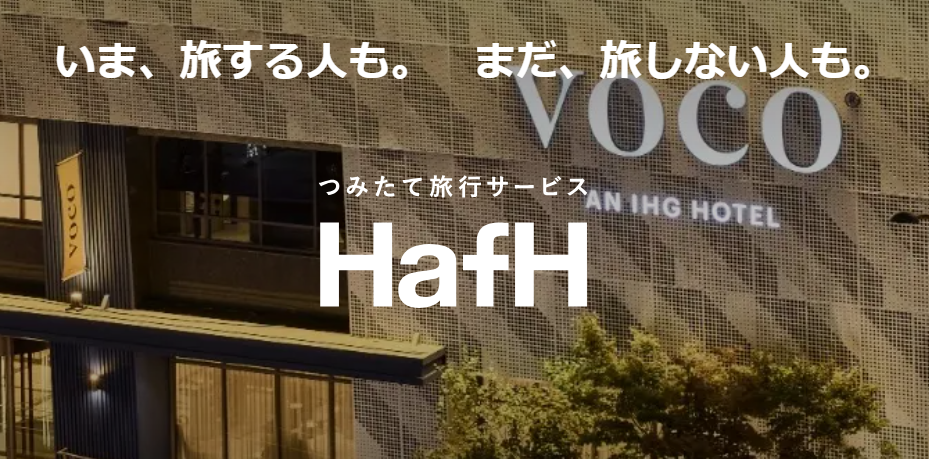

最新記事

HafHを使ってみた感想！コイン消化の注意点もまとめました
HafHを実際に使って感じたメリット・注意点をまとめました。

仙台×盛岡 1泊2日旅行記｜HafHガチャ当選で行ってきた！わんこそば・松島・牛タンを満喫
image: /static/travel/sendai_aobajo.jpg
Summary: HafHガチャで仙台行きが当選！盛岡・松島を巡る1泊2日の旅レポ。
HafH（ハフ）の飛行機ガチャに当選したので、仙台を拠点に盛岡と松島をまわる1泊2日のゆる旅に行ってきました。宿 …